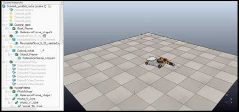
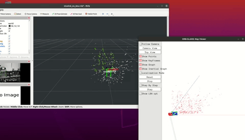

About me
| Engineer | ROS Developer | Roboticist | Drone Enthusiast |
I am Shubham Takbhate, pursuing a Master of Engineering in Robotics at the University of Maryland.
I completed my B-Tech in Mechanical Engineering from MIT Academy of Engineering.
I co-founded and captained the Aerial Robotics team and secured 17th position in the National level SAE Aero-design challenge.
I possess various programming skills, including C++, Python, MATLAB, and deep learning architectures like YOLO, RNN, and NerF.
I have worked on numerous academic projects,
such as Monocular SLAM, Robotic Urban Search and Rescue, and Gesture-based control of the DJI Tello drone.
Professional Skills:
Computer Vision, Deep-Learning, UAV Design, Path Planning, Controls, SLAM, OpenCV, ROS, C++, Python
Recent Projects

Precise drone landing
Aruco markers are square-shaped patterns that can be placed on a surface for precise detection and
tracking by computer vision systems. In autonomous drone landing, these markers guide the drone to a
specific docking station by allowing the onboard camera to capture its image and the image processing
algorithm to recognize and decode its location and orientation.
This information enables the drone to adjust its flight path and land accurately at the target location,
making Aruco markers a reliable and versatile solution for drone operations in various industries.
Automatic Image Captioning
Automatic image captioning uses Recurrent Neural Networks (RNNs) to generate text descriptions of images.
RNNs process sequential data and can take an image as input to generate a caption that describes the image.
The image is processed through a Convolutional Neural Network (CNN) to extract relevant features, which the RNN then uses to generate the caption.
The RNN is trained on a dataset of images and captions to learn how to associate certain image features with specific words and phrases.
The resulting captions are used in various applications,
including helping visually impaired individuals understand images and assisting with image search and retrieval.

Pick and Place Robot in CoppeliaSim
Using MATLAB, we implemented three different robotics-related projects.
The first project required us to analyze a KUKA robot's forward and inverse kinematics, which helped us understand the movement and position of the robot's joints.
In the second project, we implemented a path planning algorithm for a 4-wheeled omnidirectional mobile robot to optimize its path based on its starting position and end goal.
Finally, we used a simple PID controller for the trajectory planning of both the KUKA robot and the mobile robot, programming a smooth trajectory for the robots to follow using MATLAB.
These projects demonstrate the versatility of MATLAB in solving various robotics problems, including kinematics analysis and trajectory planning and control.
Affine structure from motion
This project used the Lucas-Kanade feature tracker to identify identical 2D key points across multiple building images.
By reconstructing a 3D scene and obtaining the camera pose from the tracked features in the pictures, we were able to create a 3D representation of the building.
This process is known as affine structure from motion and is commonly used in computer vision and robotics applications.

Underwater Image Enhancement
We investigated enhancing underwater images using a GAN-based model.
By employing various data preprocessing techniques, we successfully enhanced the output of these models.
Our study confirms the potential of GAN-based models for
improving the quality of underwater images and emphasizes the
significance of data preprocessing techniques in achieving desirable outcomes.

Monocular SLAM
Monocular SLAM (Simultaneous Localization and Mapping) is a technique used to construct a map of an unknown environment and
track the position of a moving camera. In this case, it was implemented on a DJI Tello drone using the ORB-SLAM3 library,
which was successful in creating a 3D point cloud and tracking the camera's position as the drone moved through the environment.